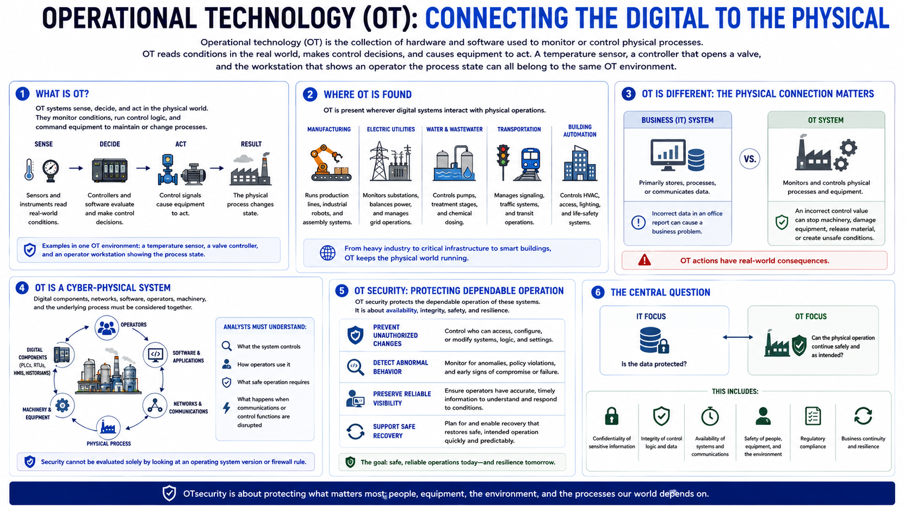

What Is Operational Technology?
Connecting to LMS... Progress: in progress

Narration
Operational technology, usually shortened to OT, is the collection of hardware and software used to monitor or control physical processes. OT reads conditions in the real world, makes control decisions, and causes equipment to act. A temperature sensor, a controller that opens a valve, and the workstation that shows an operator the process state can all belong to the same OT environment.
OT is present wherever digital systems interact with physical operations. Manufacturing plants use it to run production lines and industrial robots. Electric utilities use it to monitor substations and balance power. Water facilities control pumps, treatment stages, and chemical dosing. Transportation systems manage signaling and traffic. Building automation controls heating, ventilation, access, lighting, and life-safety support systems.
This physical connection distinguishes OT from a conventional information system. A business application primarily stores, processes, or communicates data. An OT system may do those things, but its purpose is to influence a process. Incorrect data in an office report can cause a business problem. An incorrect control value can stop machinery, damage equipment, release material, or create unsafe conditions.
OT environments are therefore cyber-physical systems. Digital components, networks, software, operators, machinery, and the underlying process must be considered together. Security cannot be evaluated solely by looking at an operating system version or firewall rule. Analysts must understand what the system controls, how operators use it, what safe operation requires, and what happens when communications or control functions are disrupted.
OT security protects the dependable operation of these systems. That includes preventing unauthorized changes, detecting abnormal behavior, preserving reliable visibility for operators, and supporting safe recovery. The central question is not only, “Is the data protected?” It is also, “Can the physical operation continue safely and as intended?”